PETS
Parakeetie
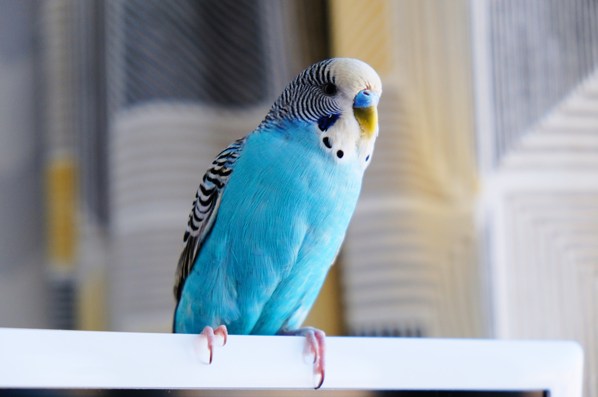 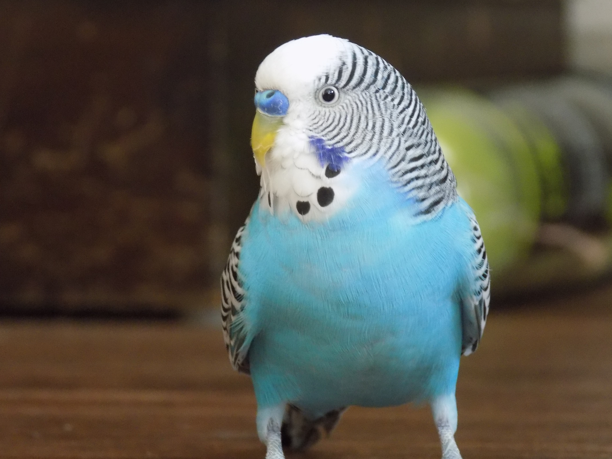
Description:
Parakeetie is a blue bird! Fun guy, like to walk, and chirb chirb
Reference
TOP: R., Elizabeth (@elizabethrova). "Blue Parakeet on white rial", Published October 31, 2018, Unsplash.com, https://unsplash.com/photos/blue-and-white-parakeet-5WRBRUsTqPk
Bottom LEFT: Potter, Helen (@helentine). "Blue Parakeet and green ball", Published 22, 2021, Unsplash.com, https://unsplash.com/photos/blue-white-and-yellow-bird-iuWLEwFR4s0
Bottom RIGHT: Grey, Alexander (@sharonmccutcheon). "Parakeet on hand",Published April 4, 2018, Unsplash.com, https://unsplash.com/photos/blue-parakeet-on-hand-W5D__7paUa0
Orangesike

 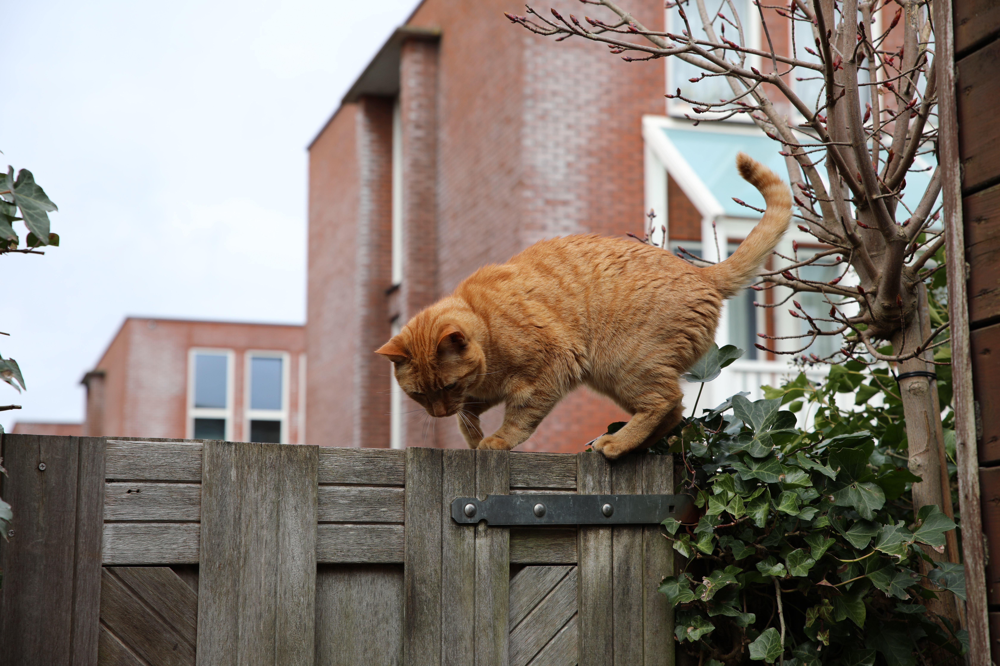
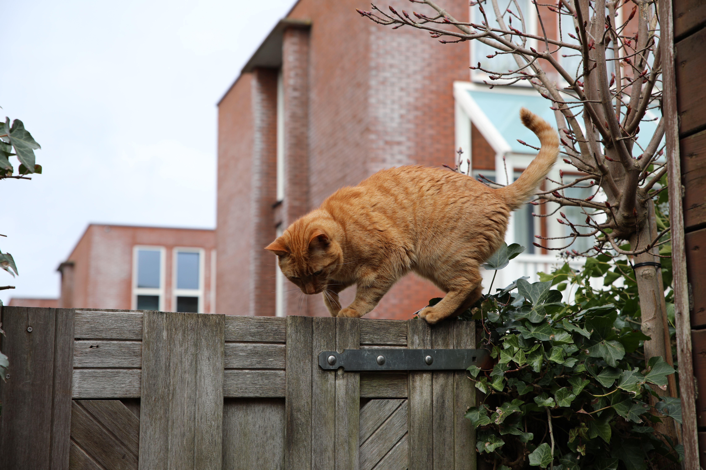
Description:
Orangesike is an orange cat, as you can see. Cute, climb, cuddle!
Reference
TOP: Chang, Sam (@answer603). " Cat front potrait", Published 29, 2020, Unsplash.com, https://unsplash.com/photos/orange-tabby-cat-in-blue-background-5-ckjYvTZQw
Bottom LEFT: Fickel, Oscar (@oscarfickel3). "Cat on fence",Published April 12, 2021, Unsplash.com, https://unsplash.com/photos/orange-tabby-cat-on-brown-wooden-fence-m7qVYuGRd_4
Bottom RIGHT: Beales, Jacalyn. "Upsidedown cat",Published May 18, 2018, Unsplash.com, https://unsplash.com/photos/long-haired-orange-cat-CKsDMYPDgCs
Duke
 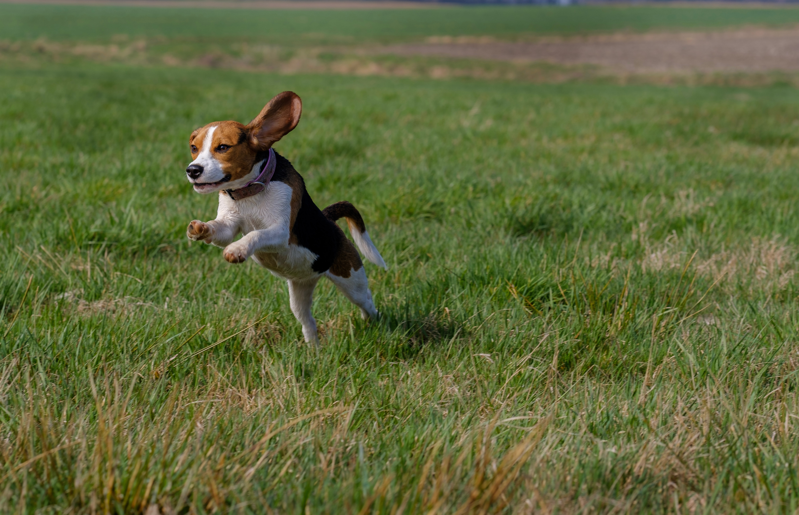
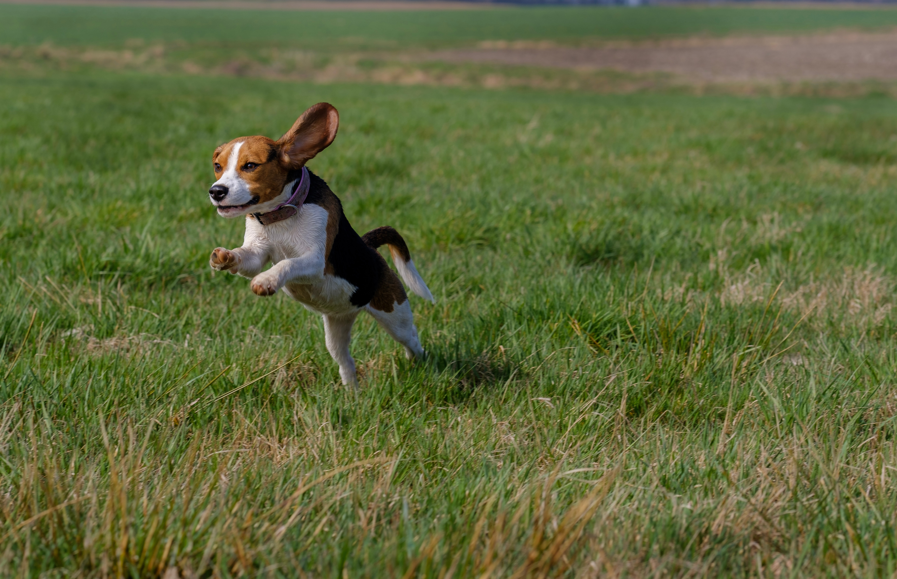

Description:
Who doesn't love beagle? They are cute!
Reference
TOP: -, Milli (@marliesestreefland). "Front Beagle", Published November 28, 2018, Unsplash.com, https://unsplash.com/photos/dogs-face-2l0CWTpcChI
Bottom LEFT: Rimmel, Mark (@markrimmel). "Running dog", Published April 2, 2019, Unsplash.com, https://unsplash.com/photos/beagle-leap-on-grass-field-s63SosNApwo
Bottom RIGHT: Wallis, Marcus (@marcus_wallis). "Sat dog", Published December 6, 2017, Unsplash.com, https://unsplash.com/photos/white-and-brown-beagle-4zfacTKyZ7w
Bubb Bubb
 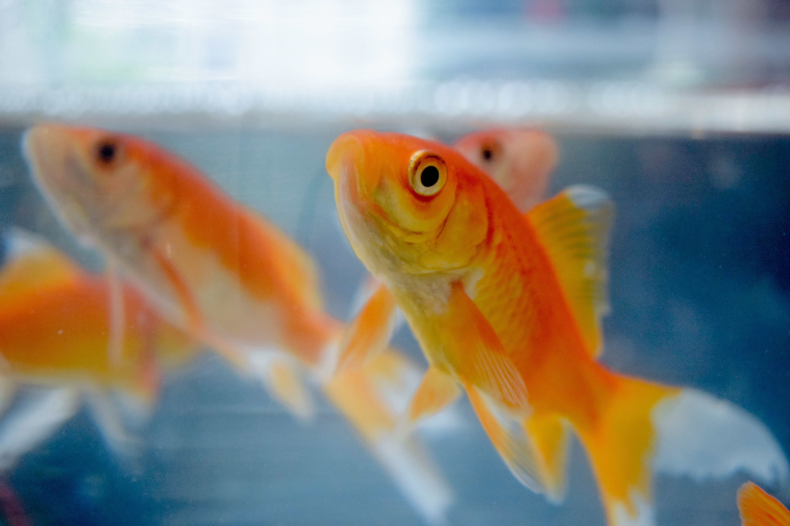
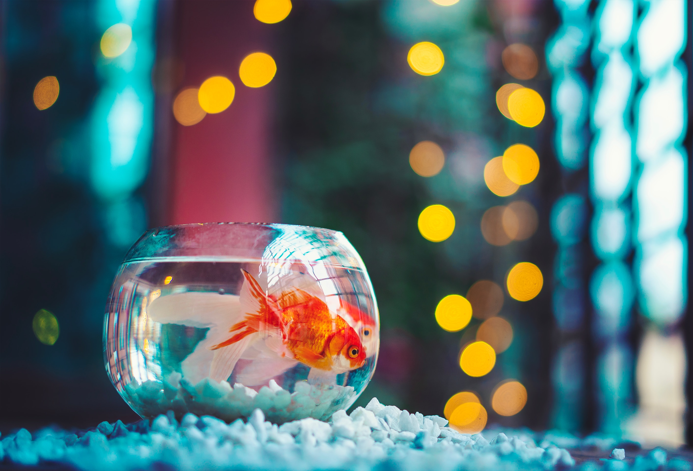
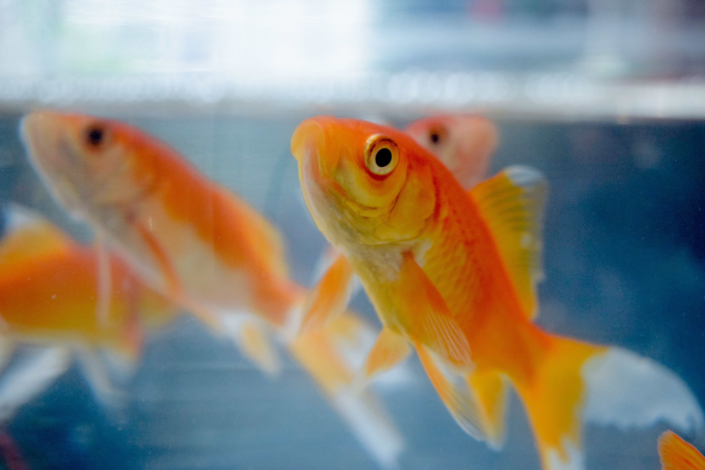
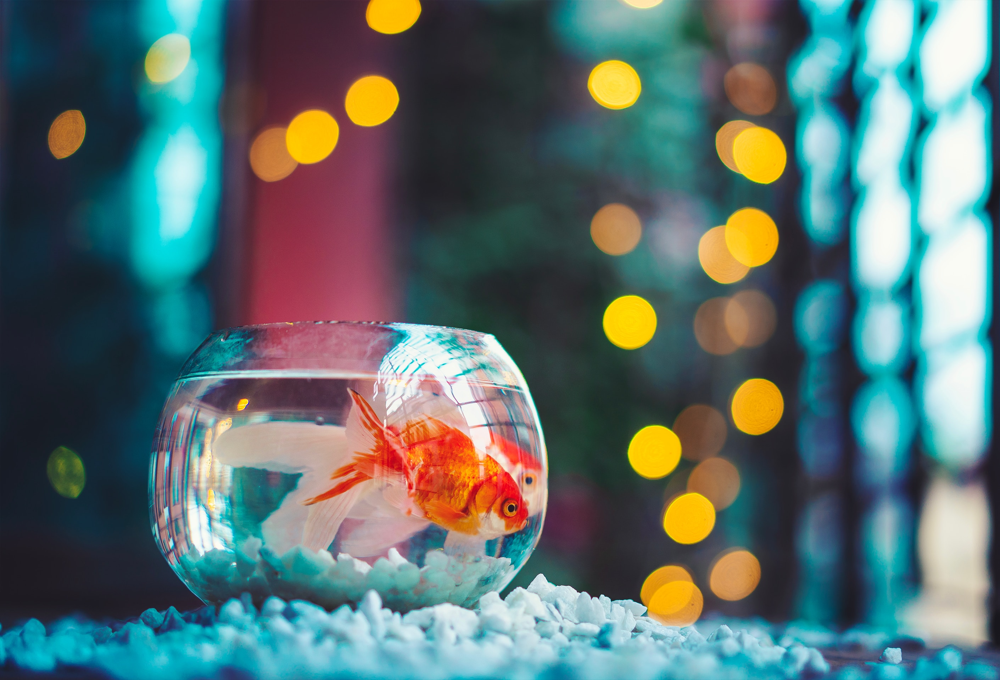
Description:
Do they really forget!? Maybe me, who forget to feed them? Lovely, beauty, bubb bubb
Reference
TOP: Tang, Zhengtao. "Black BG Fish", Published March 26, 2018, Unsplash.com, https://unsplash.com/photos/white-gold-fish-V7SKRhXskv8
Bottom LEFT: Oskuie, Pouria (@pouriaoskuie). "Two fish", Published January 16, 2020, Unsplash.com, https://unsplash.com/photos/selective-focus-photography-of-goldfish-zoaoQZT_t2g
Bottom RIGHT: Hasan, Ahmed (@carsive). "In a bowl", Published April 15, 2020, Unsplash.com, https://unsplash.com/photos/red-and-white-fish-in-fish-tank-FvQxXy8cyhM
Thousands granny
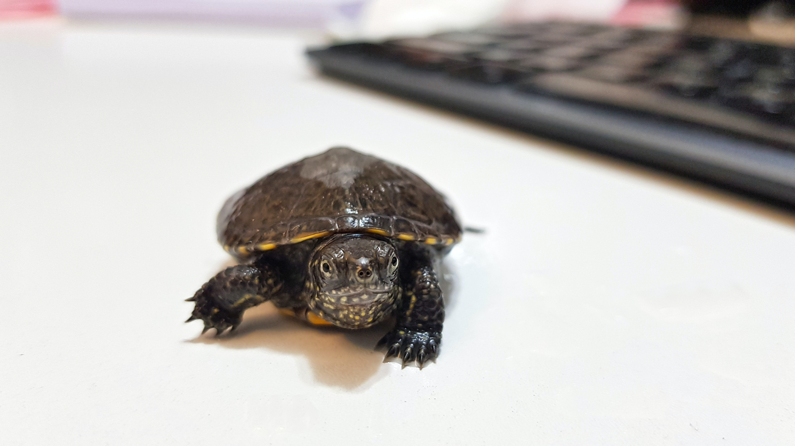 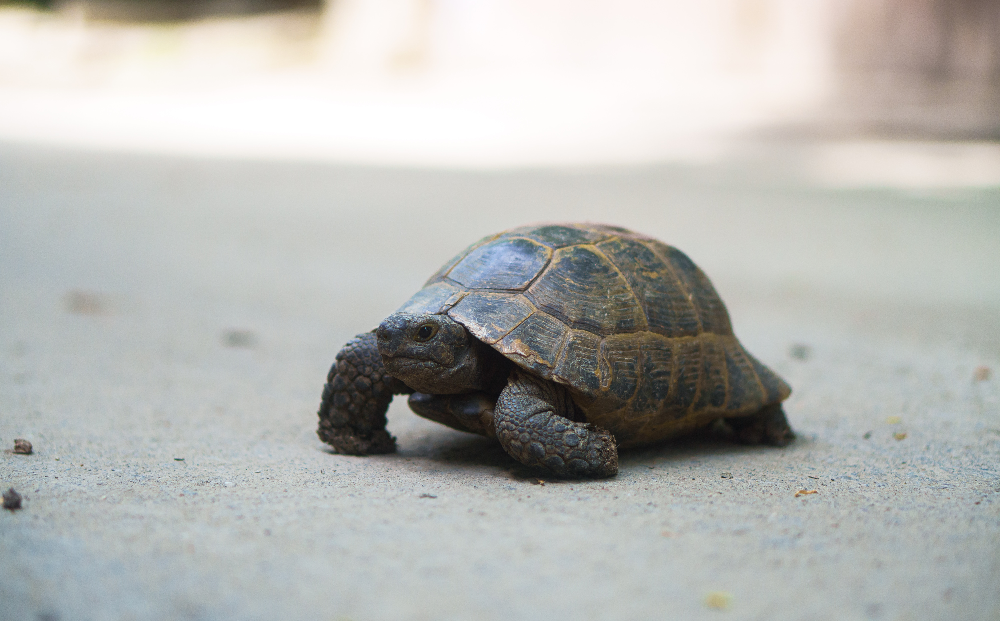
Description:
Well, please respect them, they can be antique! Slow, smile, can bite!
Reference
TOP: Memariaan, Foad. "Turtle and keyboard", Published June 16, 2019, Unsplash.com, https://unsplash.com/photos/black-turtle-on-white-surface-QT4QjV6Fzoc
Bottom LEFT: Manas, Daniel (@danielxk). "Turtle crosses street", Published August 20, 2023, Unsplash.com, https://unsplash.com/photos/a-close-up-of-a-small-turtle-on-the-ground-XMG8fQieGsc
Bottom RIGHT: Arantes, Nathália (@nathaliarantes). "Turtle with red mark", Published March 16, 2021, Unsplash.com, https://unsplash.com/photos/brown-and-black-turtle-on-wooden-surface-hPhrnZiBLMo